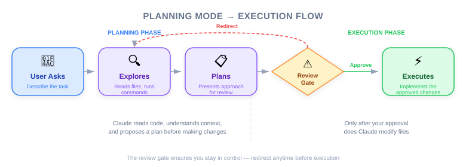
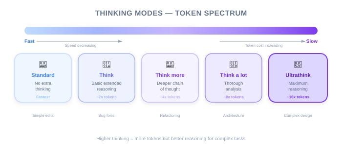

| Item | Detail |
|---|---|
| Exam Domain | D1 — Agentic Coding Fundamentals (22%), D3 — Effective Claude Code Usage (30%) |
| Task Statements | 3.4 ★★★ (plan mode vs direct), 3.5 ★★★ (iterative refinement), 1.1 ★ (agentic loops) |
| Exam Scenarios | S2 (Code Gen), S4 (Developer Productivity) |
| Source | claude-code-in-action / 02-getting-started / Lesson 08 (video + text) |
Claude Code offers three operational modes for different complexity levels: direct execution for simple changes, Planning Mode for complex multi-file restructuring, and Thinking Modes for deep reasoning on ambiguous problems.
The most precise way to tell Claude what to change is to show it:
[paste screenshot of login form]
> Move the "Forgot Password" link below the submit button
> and make it a lighter gray color
🎬 Instructor insight from the video
The instructor demonstrates pasting a screenshot of the uigen app and asking Claude to modify the UI. He emphasizes using Ctrl+V specifically — "it's Ctrl+V, not Cmd+V" — because this is the keybinding Claude Code uses for image pasting.
This is a form of multimodal input — Claude processes both the image and your text instruction to understand the change. Screenshots eliminate ambiguity about which element you mean.

Planning Mode is Claude Code's mechanism for handling complex, multi-file changes. It separates planning from execution.
Press Shift+Tab twice (or once if already auto-accepting edits):
Normal Mode: Ask → Claude executes immediately
Plan Mode: Ask → Claude plans → You review → Claude executes
┌──────────┐ ┌─────────────────┐ ┌──────────────┐
│ You Ask │───→│ Claude Explores │───→│ Claude Plans │
└──────────┘ │ (reads files, │ │ (step-by-step│
│ searches code) │ │ action list) │
└─────────────────┘ └──────┬───────┘
│
▼
┌──────────────┐
│ You Review │
│ the Plan │
└──────┬───────┘
│
┌─────────┴─────────┐
▼ ▼
┌──────────┐ ┌──────────┐
│ Approve │ │ Redirect │
│ → Execute│ │ → Replan │
└──────────┘ └──────────┘
💡 Key Insight
Planning Mode is not just "slower execution." It is a fundamentally different workflow that gathers more context before acting. The extra file reading in the planning phase often catches dependencies and edge cases that direct execution would miss.
| Use Planning Mode | Use Direct Execution |
|---|---|
| Multi-file refactoring | Single-file edits |
| Architectural changes | Simple bug fixes |
| New feature implementation across modules | Adding a CSS class |
| Tasks where you are not sure of the scope | Tasks where you know exactly what to change |
| Unfamiliar codebases | Well-understood code |

Thinking modes give Claude more tokens to reason internally before responding. This is orthogonal to Planning Mode — they solve different problems.
| Mode | Reasoning Depth | Best For |
|---|---|---|
| (default) | Standard | Most tasks |
| "Think" | Basic extended | Moderate complexity |
| "Think more" | Extended | Complex logic |
| "Think a lot" | Comprehensive | Multi-step algorithms |
| "Think longer" | Extended time | Deep analysis |
| "Ultrathink" | Maximum | Hardest problems, ambiguous requirements |
Each level gives Claude progressively more tokens for internal reasoning before generating a response.
🎬 Instructor insight from the video
The instructor explains that thinking modes give Claude "more tokens to reason about the problem." He positions ultrathink as the maximum reasoning capability, useful when Claude is struggling with a particularly complex or ambiguous task. He also notes the cost trade-off: "both features consume additional tokens."
Simply include the thinking keyword in your prompt:
> Think about how to refactor the authentication module
> Think more about the edge cases in the payment flow
> Ultrathink about the database migration strategy
This is one of the most important distinctions for the exam:
| Dimension | Planning Mode | Thinking Mode |
|---|---|---|
| What it does | Reads more files, creates an action plan | Reasons more deeply about the problem |
| Type of complexity | Breadth — many files, many components | Depth — complex logic, ambiguous requirements |
| Output | A plan you review before execution | A more thoroughly reasoned response |
| Activation | Shift+Tab (toggle) | Keyword in prompt ("think", "ultrathink") |
| User interaction | Review-approve cycle | No extra interaction needed |
| Cost driver | More file reads (tool calls) | More reasoning tokens |
Complexity Matrix:
Low Reasoning High Reasoning
Complexity Complexity
┌─────────────────┬─────────────────┐
Low Codebase │ Direct │ Think / │
Complexity │ Execution │ Ultrathink │
├─────────────────┼─────────────────┤
High Codebase │ Planning │ Planning + │
Complexity │ Mode │ Thinking Mode │
└─────────────────┴─────────────────┘
💡 Key Insight
You can combine both modes. For a task that requires understanding many files (breadth) AND solving a complex algorithm (depth), use Planning Mode with a "think" or "ultrathink" keyword. This gives Claude both broad context and deep reasoning.
The full iterative workflow combines all three techniques:
This is the agentic loop (Task 1.1) applied to real development. Each iteration narrows the gap between current state and desired state.
⚠️ Cost Consideration
Both Planning Mode and Thinking Modes consume additional tokens. Planning Mode reads more files (tool call tokens). Thinking modes use more reasoning tokens. Use them when the task complexity justifies the cost, not as a default for every request.
| Concept | Analogy | Why It Fits |
|---|---|---|
| Direct execution | Asking a senior dev to fix a typo — just do it | Simple task, no planning needed |
| Planning Mode | Architecture review before a sprint — plan first, build second | Complex task needs upfront exploration |
| Thinking modes | Giving someone extra time on an exam question | More time = better reasoning on hard problems |
| Ultrathink | Whiteboard session for a hard design problem | Maximum reasoning resources for maximum complexity |
| Planning + Thinking | Sprint planning + design review combined | Breadth (scope) + depth (reasoning) together |
| Screenshot input | Pointing at a specific button and saying "change this" | Visual communication eliminates ambiguity |
| Exam Concept | What This Lesson Teaches |
|---|---|
| Plan mode vs direct (3.4) ★★★ | Planning Mode for multi-file/complex tasks; direct for simple edits. Planning reads more files and creates a reviewable plan. |
| Iterative refinement (3.5) ★★★ | The ask → implement → review → feedback → refine cycle. Screenshots accelerate communication. |
| Agentic loops (1.1) ★ | Iterative refinement is the agentic loop in practice — gather context, plan, act, evaluate, repeat. |
Key distinctions the exam tests:
🎯 Exam note
When the exam presents a scenario with "complex multi-file restructuring," the answer almost always involves Planning Mode. When the scenario involves "ambiguous requirements" or "complex algorithm," the answer involves Thinking Modes. When both are present, combine them.
A developer needs to rename a database column that is referenced across 15 files in a Node.js monorepo. Which approach is most appropriate?
A developer is tasked with designing a new caching strategy that involves modifying the data access layer, the API routes, and the configuration system. The optimal caching algorithm depends on the specific access patterns in the codebase. Which approach is best?
A junior developer has started using "ultrathink" for every request, including simple tasks like "add a console.log statement." Their token usage has increased 5x. What guidance do you give?
| Anti-Pattern | Why It Fails | Better Approach |
|---|---|---|
| Using Planning Mode for every task | Wastes tokens on simple changes; slower than necessary | Use direct execution for simple, well-scoped changes |
| Using ultrathink for trivial tasks | Burns reasoning tokens without benefit | Reserve thinking modes for genuinely complex problems |
| Never using Planning Mode | Misses dependencies in multi-file changes | Enable Planning Mode when scope is unclear or spans multiple files |
| Describing UI changes in text only | Ambiguous — "the button on the left" could mean many things | Paste a screenshot and point to the specific element |
| Skipping the review step in Planning Mode | Defeats the purpose; might execute a flawed plan | Always review the plan before approving execution |
| Using Cmd+V instead of Ctrl+V for screenshots | Image will not paste into Claude Code | Use Ctrl+V specifically for screenshot pasting |